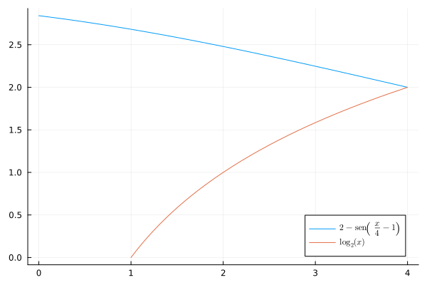

2025-06-23
Examen de Análisis II
Ejercicio 1 Dada la función
\[ f(x) = \begin{cases} x + 1 & \text{si } x<0 \\ 1 - x^2 & \text{si } x \geq 0 \end{cases} \]
Calcular la integral inferior de Riemann de \(f\) en el intervalo \([-1, 1]\).
Como \(f\) es una función a trozos, que se define de forma diferente en \([-1, 0)\) y en \([0, 1]\), calculamos la integral inferior de Riemann separadamente en cada uno de los intervalos.
Para el intervalo \([-1, 0)\), la función es \(f(x) = x + 1\), que es creciente, y por tanto alcanzará el mínimo en el extremo inferior de cualquier subintervalo. Tomando la partición \(P_n = \{-1 + \frac{i}{n}, i = 0, 1, \ldots, n\}\), en \(n\) subintervalos de igual amplitud, la suma inferior de Riemann de \(f\) para esta partición es
\[\begin{align*} s(f,P_n) &= \sum_{i=1}^{n} f(-1 + \frac{i-1}{n}) \frac{1}{n} = \sum_{i=1}^{n} \left(-1 + \frac{i-1}{n} + 1\right) \frac{1}{n} \\ &= \sum_{i=1}^{n} \frac{i-1}{n^2} = \frac{1}{n^2} \sum_{i=1}^{n} (i-1) \\ &= \frac{1}{n^2} \frac{(n-1)n}{2} = \frac{n-1}{2n}. \end{align*}\]
Así pues, la integral inferior de Riemann de \(f\) en el intervalo \([-1, 0)\) es
\[ \underline{\int_{-1}^{0}} f(x) \, dx = \lim_{n \to \infty} s(f,P_n) = \lim_{n \to \infty} \frac{n-1}{2n} = \frac{1}{2}. \]
Para el intervalo \([0, 1]\), la función es \(f(x) = 1 - x^2\), que es decreciente, y por tanto alcanzará el mínimo en el extremo superior de cualquier subintervalo. Tomando la partición \(Q_n = \{\frac{i}{n}, i = 0, 1, \ldots, n\}\), la suma inferior de Riemann de \(f\) para esta partición es
\[\begin{align*} s(f,Q_n) &= \sum_{i=1}^{n} f\left(\frac{i}{n}\right) \frac{1}{n} = \sum_{i=1}^{n} \left(1 - \left(\frac{i}{n}\right)^2\right) \frac{1}{n} = \frac{1}{n} \sum_{i=1}^{n} \left(1 - \frac{i^2}{n^2}\right) \\ &= \frac{1}{n} \sum_{i=1}^{n} \frac{n^2 - i^2}{n^2} = \frac{1}{n^3} \sum_{i=1}^{n} (n^2 - i^2) = \frac{1}{n^3} \left(\sum_{i=1}^{n} n^2 - \sum_{i=1}^{n} i^2\right) \\ &= \frac{1}{n^3} \left(n^3 - \frac{n(n+1)(2n+1)}{6}\right) = \frac{1}{n^3} \left(n^3 - \frac{2n^3 + 3n^2 + n}{6}\right) \\ &= \frac{1}{n^3} \left(\frac{6n^3 - 2n^3 - 3n^2 - n}{6}\right) = \frac{4n^3 - 3n^2 - n}{6n^3} = \frac{4n^2 - 3n - 1}{6n^2} \end{align*}\]
Así pues, la integral inferior de Riemann de \(f\) en el intervalo \([0, 1]\) es
\[ \underline{\int_{0}^{1}} f(x) \, dx = \lim_{n \to \infty} s(f,Q_n) = \lim_{n \to \infty} \frac{4n^2 - 3n - 1}{6n^2} = \frac{4}{6} = \frac{2}{3}. \]
Finalmente, la integral inferior de Riemann de \(f\) en el intervalo \([-1, 1]\) es la suma de las integrales inferiores en los dos subintervalos
\[ \underline{\int_{-1}^{1}} f(x) \, dx = \underline{\int_{-1}^{0}} f(x) \, dx + \underline{\int_{0}^{1}} f(x) \, dx = \frac{1}{2} + \frac{2}{3} = \frac{7}{6}. \]
Ejercicio 2 Un depósito tiene forma de sólido de revolución generado por la rotación alrededor del eje \(Y\) de la región limitada por las curvas \(f(x) = 2-\operatorname{sen}\left(\frac{x}{4}-1\right)\) y \(g(x) = \log_2(x)\), tal y como se muestra en la figura.

Calcular el volumen del depósito.
Si el depósito está lleno de etanol, plantear la integral para calcular el trabajo necesario para bombear todo el etanol hasta la parte superior del depósito. Suponer que la densidad del etanol es de \(790 \, \mathrm{kg/m^3}\) y que la aceleración de la gravedad es \(9.81 \, \mathrm{m/s^2}\).
Ejercicio 3 Una cápsula de café tiene un volumen generado al rotar alrededor del eje \(Y\) la región delimitada por curva \(y = 2-\frac{x^2}{2}\) en el primer cuadrante. ¿Qué cantidad de lámina de aluminio se necesita para fabricar la cápsula?
Ejercicio 4 Calcular el centroide de la región limitada por las curvas \(x=y^2\) y \(x = 4-(y-2)^2\).
Haciendo uso del centroide, calcular el volumen de los sólidos de revolución que se obtienen al rotar la región alrededor de los ejes \(X\) e \(Y\) respectivamente.
Ejercicio 5 Una señal luminosa con una intensidad inicial de 1000 unidades se propaga por un cable de fibra óptica de manera que pierde un 20% de su intensidad por cada kilómetro recorrido.
¿Cuál es la pérdida de intensidad acumulada (energía disipada) durante los 10 primeros kilómetros?
¿Cuál será la pérdida de intensidad acumulada si el cable tiene una longitud ilimitada?
Si se pone un amplificador cada 5 kilómetros que multiplica por 2 la intensidad de la señal, ¿cuál será la pérdida de intensidad acumulada si el cable tiene una longitud ilimitada?
¿Por qué factor debería multiplicar la intensidad el amplificador cada 5 kilómetros para que llegue al final del cable con la misma intensidad que al principio?
Ejercicio 6 Calcular el dominio de convergencia puntual de la serie de potencias
\[ \sum _{n=1}^{\infty} \frac{(x-1)^n}{n2^n} \]
Calcular su derivada y determinar también su dominio de convergencia puntual.
Ejercicio 7 Estudiar la convergencia de las siguientes series
- \(\sum_{n=1}^\infty \ln\left(\frac{n+1}{n}\right)\)
- \(\sum_{n=1}^\infty a_n\), donde \(a_1 = 1\) y \(a_{n+1} = \frac{\cos(n)}{n}a_n\). para \(n \geq 1\).